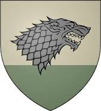
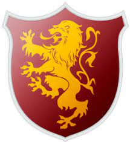
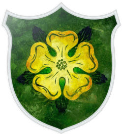
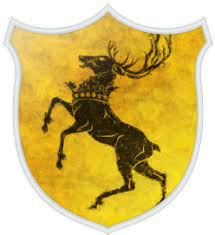
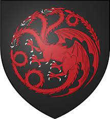

Великие дома Вестероса
Старки
Ланнистеры
Тиреллы
Мартеллы
Баратеоны
Таргариены
Старки
Дом Старков — великий дом Вестероса, короли Севера. Они управляют обширным регионом, известным как Север, из Винтерфелла. На сегодняшний день это одна из старейших линий вестеросской знати, утверждающая, что ее родословная насчитывает более восьми тысяч лет. До завоевания Таргариенов, также во время Войны Пяти Королей и в начале войны Дейенерис Таргариен за Вестерос лидеры Дома Старков правили регионом как Короли Севера.
Очень древний род. Считается, что их родословная не прерывалась со времён Брандона Строителя, жившего восемь тысяч лет назад. Как и многие другие дома Севера, Старки сохранили веру в Старых Богов.

Ланнистеры
Дом Ланнистеров — один из великих домов Вестероса, правители Западных земель. На гербе Ланнистеров изображён золотой лев на красном поле, и члены этого дома любят именовать себя «львами» и «львицами». В их власти находится город Ланниспорт — главный порт западного побережья, третий по величине город Вестероса. Когда-то Ланнистеры правили Западными землями как короли Утёса, пока Эйгон I Таргариен не разбил их в битве на Пламенном Поле
Многочисленные золотые рудники Западных Земель и умелое обращение с финансами сделали Ланнистеров самым богатым домом Семи Королевств; они — главные кредиторы королевской казны. Помимо официального девиза, у этого дома есть пословица: «Ланнистеры всегда платят свои долги».

Тиреллы
Дом Тиреллов — великий дом Вестероса. Они правят Простором — обширными, плодородными и густонаселенными землями на юго-западе континента. Родовой замок Тиреллов — Хайгарден. Являются верховными лордами Простора и Хранителями Юга со времён Завоевательной войны, когда переняли контроль над регионом у дома Гарденеров.
Дом ранее возглавлял лорд Мейс Тирелл. Маргери стала женой короля Томмена Баратеона. Мать Мейса, непокорная Оленна Тирелл, возглавила дом Тиреллов после того, как Маргери, Лорас и Мейс Тиреллы погибли при взрыве Великой септы Бейлора. При Оленне дом Тиреллов объединился с домом Таргариенов и выступил в поддержку Дейнерис Таргариен и против Серсеи Ланнистер, которая организовала уничтожение дома Тиреллов. Со смертью Оленны после разграбления Хайгардена Тиреллы считаются вымершими родом. В сериале семья Тиреллов небольшая, известны всего четыре представителя основной ветви.
Герб Тиреллов представляет собой золотую розу на бледно-зелёном поле. Их девиз: «Вырастая — крепнем».

Мартеллы
Дом Мартеллов — один из великих домов Вестероса, правители Дорна, властвующие из замка Солнечное Копьё. Традиционно глава дома и другие его представители титулуются как «принцы» и «принцессы». Мартеллы — не совсем точное название дома, более правильно именовать их Нимерос Мартеллы; «Нимерос» означает «из рода Нимерии».
Мартеллы, дом андальского происхождения, возвысились после ройнарского вторжения в Дорн много веков назад, когда королева ройнаров Нимерия взяла себе в мужья лорда Морса Мартелла. Мартеллы последними из великих домов Вестероса склонились перед Железным Троном — до этого Таргариены на протяжении почти двухсот лет пытались завоевать Дорн силой. Таргариены три раза заключали династические браки с Мартеллами, так что в жилах Мартеллов течет немного крови Таргариенов и наоборот.
Мартеллов всегда знали как осторожных людей. Из-за ройнарской крови у современных представителей дома внешность соленых дорнийцев.
Баратеоны
Дом Баратеонов — великий дом Вестероса, который правит Штормовыми землями на восточном побережье Вестероса, названными так в честь частых штормов. Фамильным замком Баратеонов являлся Штормовой Предел.
Дом Баратеонов стал королевским домом Семи Королевств после того, как Роберт Баратеон возглавил восстание против династии Таргариенов. В конце восстания Роберт взошел на Железный трон как Роберт I и после смерти Лианны Старк женился на Серсее Ланнистер.
Дом Баратеонов официально вымер после смерти Станниса Баратеона и его семьи, но возродился, когда последний известный бастард Роберта был узаконен королевой Дейнерис Таргариен как Джендри Баратеон.
Герб дома Баратеонов — чёрный олень с короной на золотом поле, а девиз: «Нам — ярость».

Таргариены
Дом Таргариенов — один из великих домов Вестероса, бывшая королевская династия, ранее правившая Семью Королевствами. Таргариены были одной из аристократических семей Валирии, умевших повелевать драконами; согласно преданиям, в их жилах текла драконья кровь. Спустя много лет после падения Валирии Эйгон I Таргариен вторгся с тремя драконами в материковый Вестерос, покорил королевства андалов и Первых людей и провозгласил себя королем на Железном троне. Его потомки правили Вестеросом на протяжении почти трехсот лет. В ходе восстания Роберта Баратеона Таргариены были свергнуты, и новой королевской династией стали Баратеоны.
Таргариенам принадлежали Красный Замок в Королевской Гавани и островной Драконий Камень — древняя валирийская крепость в Узком море. В прошлом у них также была летняя резиденция в дорнийских горах — Летний Замок. Представителей рода в Вестеросе легко узнать по характерной валирийской внешности: серебряные с золотым отливом или платиново-белые волосы, пурпурные, индиговые или фиолетовые глаза.
